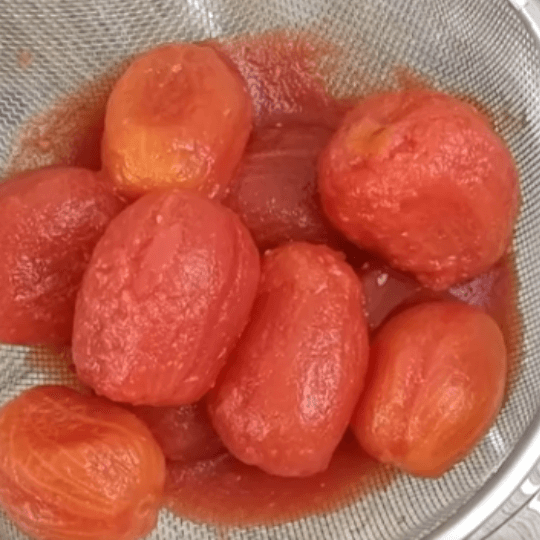
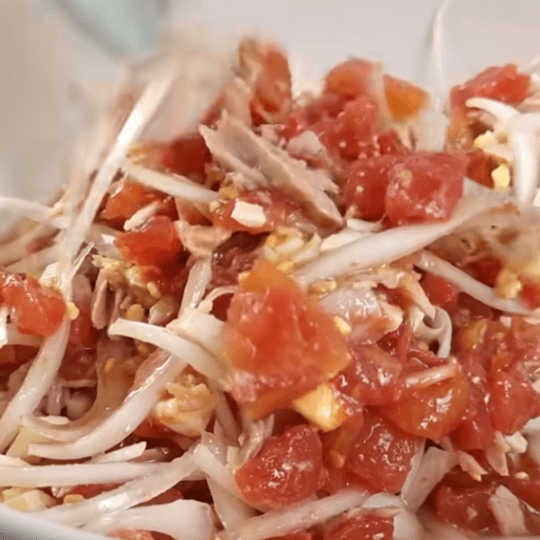

Ingredientes
1 bote de 1/2 kg de tomate en conserva 2 latitas de atún (en aceite o en escabeche) 1 cebolla tierna 2 huevos cocidos 150 g de aceitunas negras Aceite de oliva Sal
1 bote de 1/2 kg de tomate en conserva 2 latitas de atún (en aceite o en escabeche) 1 cebolla tierna 2 huevos cocidos 150 g de aceitunas negras Aceite de oliva Sal
Una de las cualidades que define la calidad de una ensaiaa¿¡:es el ac:eifeempleado en el aliño, y como el murciano es amante del "sopar" y el "migar", lo recomendable y saludable es usar siempre aceite de oliva. Aunque las palabras anteriores no supongan ciertamente una actitud muy fina, definen perfectamente esa afición tan nuestra por echar migas de pan en los caldetes de las ensaladas.
Proteínas: 29 g Grasas: 61 g Hidratos de carbono: 9 g Por persona: 175 kcal Total: 700 kcal
Temporada de consumo: Todo el año Ideal para: Comida o cena Rinde para: 4 comensales Dificultad: Fácil Vino: Blanco de Cartagena
Una vez abierto el bote de tomate en conserva, se vierte su contenido sobre un plato o una fuente plana. Tras cortar el tomate muy fino con un cuchillo, se vierte sobre una ensaladera. La cebolla se pela y se corta también muy fina previamente, para echarla después en la ensaladera sobre el tomate, junto con el atún.
Tras cocer los huevos durante más de cinco minutos, hasta que estén duros, se trocean en rodajas que se esparcen por la ensaladera sobre los otros tres ingredientes. Las aceitunas también se reparten por encima.
Finalmente, se echa una miaja de sal y se rocía la preparación con un buen chorro de aceite de oliva. Se ha de remover bien el mojete para que los ingredientes se mezclen de forma homogénea y se empapen del aceite de oliva.
